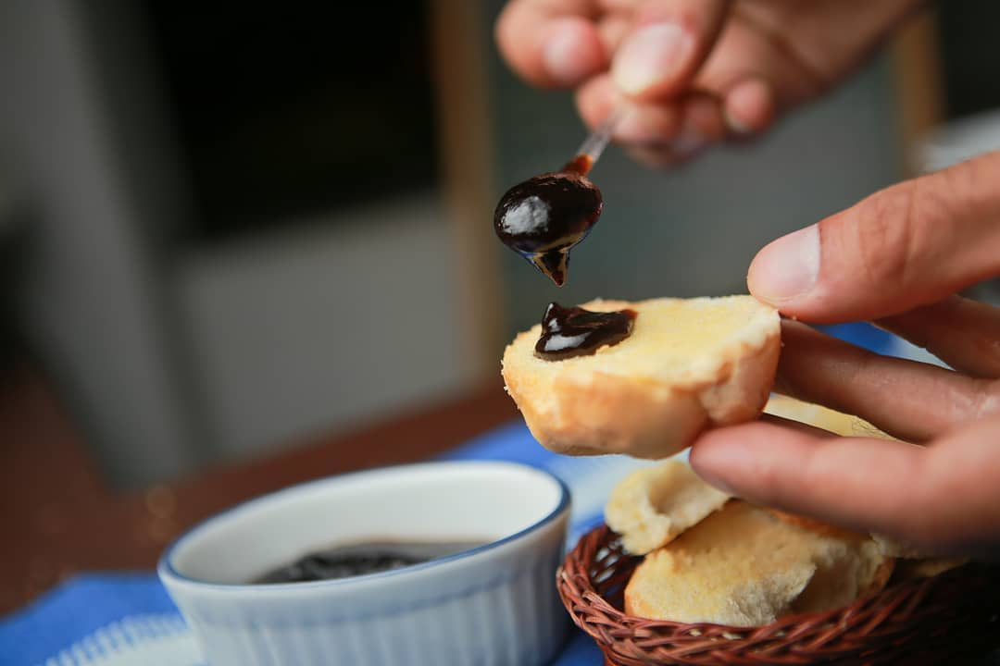
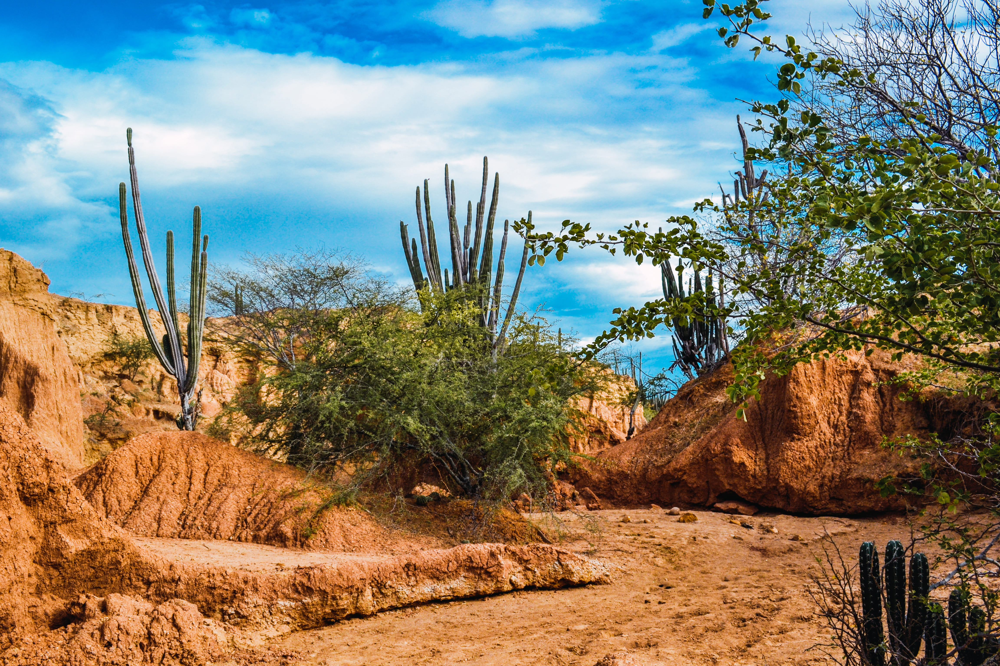
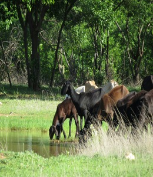
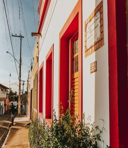
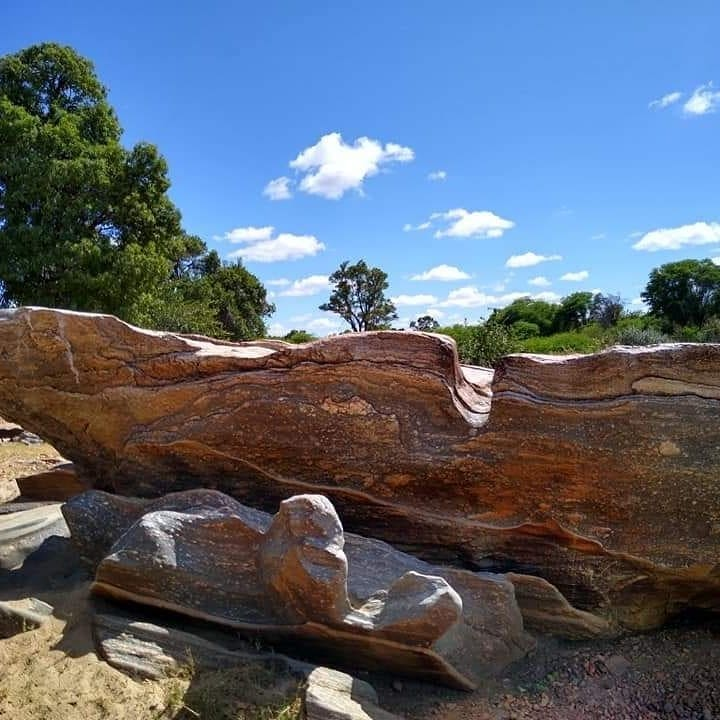

Sabores da Cozinha Florestana
Conheca pratos tradicionais que representam a identidade, a hospitalidade e a forca cultural do povo de Floresta-PE.
Pratos Tpicos de Floresta-PE
A mesa sertaneja um convite memria e ao afeto. Em Floresta-PE, cada prato traduz a sabedoria popular de transformar ingredientes simples em receitas marcantes, carregadas de tradicao, sustento e celebrao.

Bode Assado
Ícone da culinária sertaneja, o bode assado é preparado com temperos fortes, marinada cuidadosa e cozimento lento, resultando em carne macia e sabor profundo.
Em reuniões de família e festas locais, o prato costuma ser servido com arroz, macaxeira ou farofa, representando a tradição de acolher bem quem chega ao sertão.

Carne de Sol
Presente nos cardápios da região, a carne de sol é uma técnica tradicional de conservação que se transformou em patrimônio gastronômico nordestino.
Servida na chapa ou desfiada, ganha destaque ao lado da mandioca cozida, feijão verde e manteiga de garrafa, em combinações que conquistam moradores e visitantes.

Baião de Dois
Clássico das cozinhas nordestinas, o baião de dois combina arroz e feijão em uma receita nutritiva, colorida e cheia de personalidade.
Com toques de queijo coalho, coentro e carnes regionais, é uma opção que resume o sabor do sertão em cada garfada.

Feijão Tropeiro
De origem popular e preparo robusto, o feijão tropeiro é um prato que combina feijão, farinha, ovos e temperos, oferecendo energia para o dia a dia sertanejo.
Na culinária de Floresta, ele aparece em almoços tradicionais e eventos comunitários, sempre ligado ao sentimento de partilha.

Mungunzá
Doce e reconfortante, o mungunzá é preparado com milho, leite e especiarias, sendo presença garantida em festas juninas e encontros familiares.
Mais que sobremesa, o prato carrega lembranças afetivas da infância sertaneja e reforça o valor das receitas transmitidas de geração em geração.
Galeria de Sabores



A Importncia da Culinaria Local
Sabores que contam historias
As receitas tipicas preservam memrias, sotaques e costumes do povo sertanejo, fortalecendo a identidade cultural da cidade.
Conhecer tradicoes Gerao de renda local
A gastronomia movimenta restaurantes, feiras e pequenos produtores, atraindo visitantes em busca de experiencias autnticas.
Explorar sabores
Receitas de gerao em gerao
O preparo compartilhado dos pratos tradicionais fortalece lacos familiares e mantm viva a herana culinria do sertao.
Valorizar a cultura
Uma viagem pelos sentidos
Conhecer Floresta-PE tambem provar sua culinria: cada prato aproxima o visitante da historia, do territorio e da hospitalidade local.
Planejar roteiro